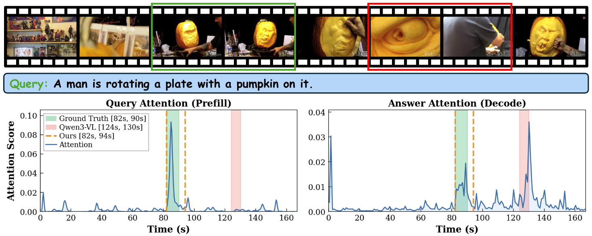
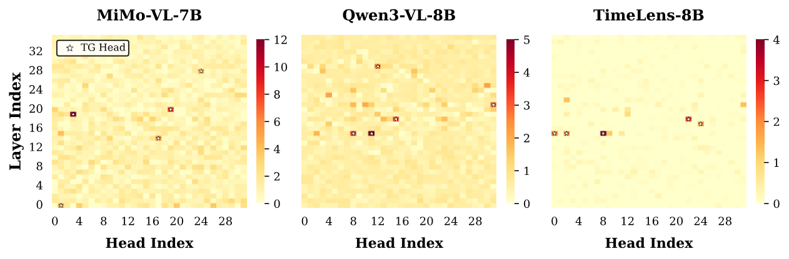
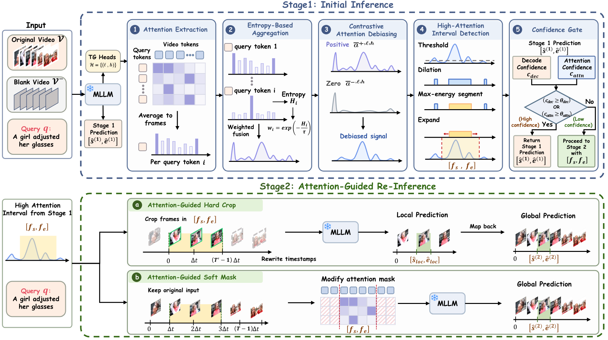
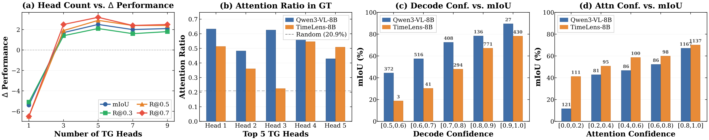
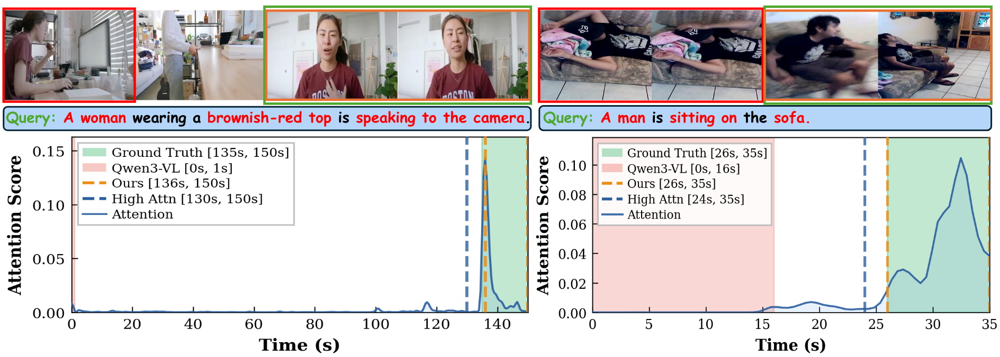

MLLMs Know When Before Speaking:
Revealing and Recovering Temporal Grounding via Attention Cues
Abstract
Video temporal grounding (VTG), which localizes the start and end times of a queried event in an untrimmed video, is a key test of whether multimodal large language models (MLLMs) understand not only what happens but also when it happens. Although modern MLLMs describe video content fluently, their timestamp predictions remain unreliable, while existing remedies either require costly post-training on temporal annotations or rely on coarse training-free heuristics. In this work, we probe the cross-modal attention of MLLMs and uncover a perception-generation gap. Our key finding is that MLLMs often know the target interval during prefill, but lose this signal when generating the final answer. In the prefill stage, a sparse set of attention heads, which we call Temporal Grounding Heads (TG-Heads), concentrates query-to-video attention on the ground-truth interval. During autoregressive decoding, however, the answer tokens shift attention away from this interval toward visually salient but query-irrelevant segments. This observation motivates an inference-time read-then-regenerate framework. We first convert TG-Head prefill attention into a debiased frame-level relevance signal and extract the high-attention interval it highlights. We then re-invoke the MLLM with visual context restricted to this interval, using video cropping or attention masking to suppress distractors. Without parameter updates and architectural changes, our framework consistently improves MiMo-VL-7B, Qwen3-VL-8B, and TimeLens-8B on three VTG benchmarks, with gains of up to +3.5 mIoU.
Key Results
(MiMo-VL-7B)
(Qwen3-VL-8B)
(No Training)
Evaluated
per Model
Motivation

Figure: MLLMs know when during prefill but forget during decoding. During prefill (left), attention from query tokens peaks at the ground-truth interval. During decoding (right), attention from the generated answer tokens drifts away to a visually salient but query-irrelevant segment.
Although modern MLLMs describe video content fluently, their timestamp predictions remain unreliable. We probe the cross-modal attention of MLLMs and uncover a striking perception-generation gap: the model often already knows the correct temporal interval during prefill, but loses this signal when generating the final answer.
We hypothesize this gap arises from an asymmetry between reading and speaking. During prefill, the full query provides focused linguistic intent, allowing TG-Heads to bind discriminative words to relevant frames. During decoding, numeric timestamp tokens provide little semantic guidance while attending over hundreds of visual tokens, diluting the localized signal.
Temporal Grounding Heads

Figure: Grounding Contribution Score (GCS) of each attention head across three MLLMs. Each dot is one head, and the top-K heads are marked with stars. The distribution is sharply heavy-tailed: only a small number of heads contribute substantially to temporal grounding.
We conduct a systematic head knockout study: for each attention head, we suppress its query-to-video attention and measure the resulting drop in VTG accuracy. The result is sharply non-uniform — out of hundreds of heads, only a small subset causes substantial degradation when removed.
🔍 Attention Knockout
For each head, we block cross-modal attention from query tokens to video tokens and measure the mIoU drop. Heads whose removal causes disproportionate degradation are flagged as TG-Heads.
📊 Grounding Contribution Score (GCS)
GCS = mIoU(base) − mIoU(knockout). A large positive GCS means the model heavily relies on that head for temporal grounding. We select the top-K=5 heads as TG-Heads.
⚡ One-Time Calibration
TG-Head identification requires only 500 samples (0.5% of typical VTG training corpora) and is performed once per model, then fixed across all benchmarks.
Method: Read-Then-Regenerate

Figure: Overview of our two-stage framework. Stage 1 runs the MLLM once to obtain a baseline prediction and processes TG-Head prefill attention through extraction, entropy-based aggregation, contrastive debiasing, and interval detection. A confidence gate decides whether Stage 2 is needed. Stage 2 re-invokes the MLLM with visual context restricted to the detected interval via Hard Crop or Soft Mask.
📖 Stage 1: Initial Inference
Run a single forward pass to obtain a baseline prediction and extract TG-Head prefill attention. Apply entropy-based aggregation to weight discriminative query tokens, then contrastive debiasing against a blank-video reference to remove attention sinks. Detect the high-attention temporal interval.
🔁 Stage 2: Attention-Guided Re-Inference
Re-invoke the MLLM with visual context restricted to the detected interval. Two variants: Hard Crop (re-read the cropped clip with higher per-frame resolution) for general-purpose models, and Soft Mask (hide out-of-interval tokens via attention mask) for VTG-tuned models.
🚦 Confidence Gate
Skip Stage 2 when the Stage 1 prediction is already reliable, based on decode confidence (geometric mean of numeric token probabilities) and attention confidence (whether the predicted region contains the attention peak).
Main Results
Our framework delivers consistent improvements across all three backbones and all three benchmarks without any parameter updates or architectural changes.
| Model | QVHighlights-TimeLens | Charades-TimeLens | ActivityNet-TimeLens | |||||||||
|---|---|---|---|---|---|---|---|---|---|---|---|---|
| R1@0.3 | R1@0.5 | R1@0.7 | mIoU | R1@0.3 | R1@0.5 | R1@0.7 | mIoU | R1@0.3 | R1@0.5 | R1@0.7 | mIoU | |
| Proprietary Models | ||||||||||||
| GPT-4o | 69.0 | 54.8 | 38.5 | 52.1 | 60.6 | 44.5 | 23.5 | 41.8 | 55.2 | 41.4 | 25.8 | 40.4 |
| Gemini-2.5-Pro | 84.1 | 75.9 | 61.1 | 70.4 | 74.1 | 61.1 | 34.0 | 52.8 | 72.3 | 64.2 | 47.1 | 58.1 |
| Open-Source Models | ||||||||||||
| Qwen2.5-VL-7B | 44.1 | 31.5 | 17.1 | 33.7 | 60.4 | 38.0 | 16.8 | 39.8 | 45.6 | 32.0 | 17.0 | 32.5 |
| Our Framework (+Ours) | ||||||||||||
| MiMo-VL-7B | 65.1 | 55.4 | 40.9 | 51.8 | 63.8 | 46.5 | 24.4 | 44.4 | 58.3 | 45.8 | 29.2 | 42.6 |
| MiMo-VL-7B (+Ours) | 70.1 ↑5.0 | 58.9 ↑3.5 | 43.5 ↑2.6 | 55.3 ↑3.5 | 65.0 ↑1.2 | 48.4 ↑1.9 | 25.9 ↑1.5 | 46.0 ↑1.6 | 59.6 ↑1.3 | 47.6 ↑1.8 | 30.4 ↑1.2 | 44.1 ↑1.5 |
| Qwen3-VL-8B | 74.1 | 64.1 | 49.1 | 59.4 | 69.0 | 53.1 | 27.6 | 48.2 | 62.2 | 51.6 | 34.7 | 46.9 |
| Qwen3-VL-8B (+Ours) | 77.3 ↑3.2 | 67.0 ↑2.9 | 51.2 ↑2.1 | 61.9 ↑2.5 | 71.2 ↑2.2 | 55.2 ↑2.1 | 28.3 ↑0.7 | 49.5 ↑1.3 | 64.2 ↑2.0 | 52.9 ↑1.3 | 35.4 ↑0.7 | 48.2 ↑1.3 |
| TimeLens-8B | 80.1 | 71.5 | 55.5 | 65.4 | 76.6 | 63.0 | 35.2 | 55.2 | 68.7 | 58.0 | 40.8 | 53.1 |
| TimeLens-8B (+Ours) | 80.6 ↑0.5 | 71.9 ↑0.4 | 55.7 ↑0.2 | 65.8 ↑0.4 | 76.9 ↑0.3 | 63.4 ↑0.4 | 35.3 ↑0.1 | 55.5 ↑0.3 | 68.9 ↑0.2 | 58.2 ↑0.2 | 41.2 ↑0.4 | 53.3 ↑0.2 |
↑ indicates improvement over the corresponding base model. Highlighted rows are our method.
Analysis

Figure: Analysis on Qwen3-VL-8B and TimeLens-8B (QVHighlights-TimeLens). (a) Performance vs. number of TG-Heads K. (b) Attention ratio of the ground-truth interval in each of the top-5 TG-Heads, compared to a random baseline. (c, d) Stage 1 mIoU bucketed by decode confidence and attention confidence.
📈 Sensitivity to K
Using a single head (K=1) degrades performance. Performance improves steadily, peaking at K=5. Beyond K=5, weaker heads introduce noise. We use K=5 for all experiments.
🎯 Do MLLMs Really Know When?
The attention ratio of TG-Heads consistently exceeds the random baseline, confirming that TG-Heads genuinely localize queried events. Base Qwen3-VL exhibits higher ratios than VTG-tuned TimeLens-8B, explaining larger gains on the base model.
🚦 Confidence Gate Effect
Both decode confidence and attention confidence positively correlate with mIoU. The gate identifies low-confidence cases (where decoding drifts from attention evidence) and routes them to Stage 2 for correction.
Qualitative Results
Two examples where our method corrects an erroneous baseline prediction. Blue dashed boxes indicate the detected high-attention interval.

Figure: In the first case, the baseline is misled by visual similarity, while our TG-Head attention peaks at the correct later segment. In the second case, our high-attention interval filters out the earlier segment and guides Stage 2 to the correct prediction.
Contributions
BibTeX
@article{du2026mllmsknowwhen,
title={MLLMs Know When Before Speaking: Revealing and Recovering Temporal Grounding via Attention Cues},
author={Du, Dazhao and Duan, Liao and Liu, Jian and Han, Tao and Zhang, Yujia and Liu, Eric and Chen, Xi and Guo, Song},
year={2026}
}